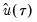
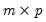
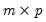

where  is the so-called check function
is the so-called check function which weights positive and negative values asymmetrically.
Our experience with our optimized version of the BR algorithm is that its performance is certainly better than commonly portrayed. Using various subsets of the low-birthweight data described in Koenker and Hallock (2001), we find that while certainly not as fast as Cholesky-based linear regression (and possibly not as fast as interior point methods), the estimation times for the modified BR algorithm are quite reasonable.
We may divide the estimators into three distinct classes: (1) direct methods for estimating the covariance matrix in i.i.d. settings; (2) direct methods for estimating the covariance matrix for independent but not-identical distribution; (3) bootstrap resampling methods for both
i.i.d. and
i.n.i.d. settings.
and  , which is termed the sparsity function
, which is termed the sparsity function or the
quantile density function, may be interpreted either as the derivative of the quantile function or the inverse of the density function evaluated at the

-th quantile (see, for example, Welsh, 1988). Note that the
i.i.d. error assumption implies that does not depend on

so that the quantile functions depend on

only in location, hence all conditional quantile planes are parallel.
We have seen the importance of the sparsity function in the formula for the asymptotic covariance matrix of the quantile regression estimates for i.i.d. data. Unfortunately, the sparsity is a function of the unknown distribution

, and therefore is a nuisance quantity which must be estimated.
The first approach to evaluating the quantile functions, which EViews terms is due to Bassett and Koenker (1982). The approach involves estimating two additional quantile regression models for and , and using the estimated coefficients to compute fitted quantiles. Substituting the fitted quantiles into the numeric derivative expression yields:
for an arbitrary  . While the i.i.d.
. While the i.i.d. assumption implies that may be set to any value, Bassett and Koenker propose using the mean value of

, noting that the mean possesses two very desirable properties: the precision of the estimate is maximized at that point, and the empirical quantile function is monotone in

when evaluated at , so that

will always yield a positive value for suitable

.
where  are the residuals from the quantile regression fit. EViews supports the latter density function approach, which is termed the method, since it is closely related to the more commonly employed Powell (1984, 1989) kernel estimator for the non-
i.i.d. case described below.
The Siddiqui-type method proposed by Hendricks and Koenker (1991) is a straightforward generalization of the scalar Siddiqui method (see “Siddiqui Difference Quotient”). As before, two additional quantile regression models are estimated for and

, and the estimated coefficients may be used to compute the Siddiqui difference quotient:
EViews supports four different bootstrap methods: the residual bootstrap (), the design, or XY-pair, bootstrap (), and two variants of the Markov Chain Marginal Bootstrap ( and ).
The residual bootstrap, is constructed by resampling (with replacement) separately from the residuals and from the

.
The XY-pair bootstrap is the most natural form of bootstrap resampling, and is valid in settings where

and

are not independent. For the XY-pair bootstrap, we simply form

randomly drawn (with replacement) subsamples of size

from the original data, then compute estimates of

using the for each subsample. The asymptotic covariance matrix is then estimated from sample variance of the bootstrap results using
Equation (40.25).
You should note the presence of the sparsity term  in the denominator of both expressions. Any of the sparsity estimators outlined in “Sparsity Estimation”
in the denominator of both expressions. Any of the sparsity estimators outlined in “Sparsity Estimation” may be employed for either the null or alternative specifications; EViews uses the sparsity estimated under the alternative. The presence of

should be a tipoff that these test statistics require that the quantile density function does not depend on

, as in the pure location-shift model.
The Wald test formed for this null is zero under the null hypothesis of symmetry. The null has restrictions, so the Wald statistic is distributed as a . Newey and Powell point out that if it is known a priori that the errors are
i.i.d., but possibly asymmetric, one can restrict the null to only examine the restriction for the intercept. This restricted null imposes only restrictions on the process coefficients.


. The asymptotic distribution of in the i.n.i.d. setting takes the Huber sandwich form (see, among others, Hendricks and Koenker, 1992):
-th conditional quantile for individual
. Note that if the conditional density does not depend on the observation, the Huber sandwich form of the variance in Equation (40.18) reduces to the simple scalar sparsity form given in Equation (40.9).
Computation of a sample analogue tois straightforward so we focus on estimation of
. EViews offers a choice of two methods for estimating
: a Siddiqui-type difference method proposed by Hendricks and Koenker (1992), and a Powell (1984, 1989) kernel method based on residuals of the estimated model. EViews labels the first method Siddiqui (mean fitted), and the latter method Kernel (residual):
The Siddiqui-type method proposed by Hendricks and Koenker (1991) is a straightforward generalization of the scalar Siddiqui method (see “Siddiqui Difference Quotient”). As before, two additional quantile regression models are estimated for andis a kernel function that integrates to 1, and is a kernel bandwidth. EViews uses the Koenker (2005) kernel bandwidth as described in “Kernel Density” above.
EViews supports four different bootstrap methods: the residual bootstrap (Residual), the design, or XY-pair, bootstrap (XY-pair), and two variants of the Markov Chain Marginal Bootstrap (MCMB and MBMB-A).The residual bootstrap, is constructed by resampling (with replacement) separately from the residuals and from the-dimensional bootstrap optimization to a sequence of
easily solved one-dimensional problems. The sequence of one-dimensional solutions forms a Markov chain whose sample variance, computed using Equation (40.25), consistently approximates the true covariance for large
and .
Kocherginsky, He, and Mu (KHM, 2005) propose a modification to MCMB, which alleviates autocorrelation problems by transforming the parameter space prior to performing the MCMB algorithm, and then transforming the result back to the original space. Note that the resulting MCMB-A algorithm requires the i.i.d. assumption, though the authors suggest that the method is robust against heteroskedasticity.tests, though as Koenker (2005) points out, they may also be thought of as quasi-likelihood ratio tests.
may be performed directly using (40.32), (40.33) and (40.34), or using one of the bootstrap variants.
 with probability distribution function
with probability distribution function -th quantile of
-th quantile of  may be defined as the smallest
may be defined as the smallest  satisfying :
satisfying : observations on
observations on  , the traditional empirical distribution function is given by:
, the traditional empirical distribution function is given by: is true and 0 otherwise. The associated empirical quantile is given by,
is true and 0 otherwise. The associated empirical quantile is given by, . We assume a linear specification for the conditional quantile of the response variable
. We assume a linear specification for the conditional quantile of the response variable  given values for the
given values for the  -vector of explanatory variables
-vector of explanatory variables  :
: is the vector of coefficients associated with the
is the vector of coefficients associated with the  -th quantile.
-th quantile. : two Siddiqui (1960) difference quotient methods (Koenker, 1994; Bassett and Koenker (1982) and one kernel density estimator (Powell, 1986; Jones, 1992; Buchinsky 1995).
: two Siddiqui (1960) difference quotient methods (Koenker, 1994; Bassett and Koenker (1982) and one kernel density estimator (Powell, 1986; Jones, 1992; Buchinsky 1995). tending to zero as the sample size . is in essence computed using a simply two-sided numeric derivative of the quantile function. To make this procedure operational we need to determine: (1) how to obtain estimates of the empirical quantile function at the two evaluation points, and (2) what bandwidth to employ.
tending to zero as the sample size . is in essence computed using a simply two-sided numeric derivative of the quantile function. To make this procedure operational we need to determine: (1) how to obtain estimates of the empirical quantile function at the two evaluation points, and (2) what bandwidth to employ. empirical quantiles of the residuals from the original quantile regression equation, as in Koenker (1994). Following Koencker, we compute quantiles for the residuals excluding the
empirical quantiles of the residuals from the original quantile regression equation, as in Koenker (1994). Following Koencker, we compute quantiles for the residuals excluding the  residuals that are set to zero in estimation, and interpolating values to get a piecewise linear version of the quantile. EViews refers to this method as
residuals that are set to zero in estimation, and interpolating values to get a piecewise linear version of the quantile. EViews refers to this method as  . EViews offers the Bofinger (1975), Hall-Sheather (1988), and Chamberlain (1994) bandwidth methods (along with the ability to specify an arbitrary bandwidth).
. EViews offers the Bofinger (1975), Hall-Sheather (1988), and Chamberlain (1994) bandwidth methods (along with the ability to specify an arbitrary bandwidth).  the parameter controlling the size of the desired
the parameter controlling the size of the desired  confidence intervals.
confidence intervals.  using the inverse of a kernel density function estimator (Powell, 1986; Jones, 1992; Buchinsky 1995). In the present context, we may compute:
using the inverse of a kernel density function estimator (Powell, 1986; Jones, 1992; Buchinsky 1995). In the present context, we may compute: . We follow Koenker (2005, p. 81) in choosing:
. We follow Koenker (2005, p. 81) in choosing: the sample standard deviation and
the sample standard deviation and  the interquartile range) and is the Siddiqui bandwidth.
the interquartile range) and is the Siddiqui bandwidth. is as defined earlier,
is as defined earlier, is a small positive number included to prevent division by zero.
is a small positive number included to prevent division by zero. :
: -vector of resampled residuals, and let
-vector of resampled residuals, and let  be a  matrix of independently resampled
be a  matrix of independently resampled  . (Note that
. (Note that  need not be equal to the original sample size
need not be equal to the original sample size  .) We form the dependent variable using the resampled residuals, resampled data, and estimated coefficients, , and then construct a bootstrap estimate of
.) We form the dependent variable using the resampled residuals, resampled data, and estimated coefficients, , and then construct a bootstrap estimate of  using and
using and  .
.  bootstrap replications, and the estimator of the asymptotic covariance matrix is formed from:
bootstrap replications, and the estimator of the asymptotic covariance matrix is formed from: requires independence of the
requires independence of the  and the
and the  .
.  -dimensional linear programming problem for each bootstrap replication.
-dimensional linear programming problem for each bootstrap replication. , and may result in non-convergence of the covariance estimates for any chain of practical length.
, and may result in non-convergence of the covariance estimates for any chain of practical length. between 100 and 200 for relatively small problems (). For moderately large problems with between 10,000 and 2,000,000, they recommend
between 100 and 200 for relatively small problems (). For moderately large problems with between 10,000 and 2,000,000, they recommend  between 50 and 200 depending on one’s level of patience.
between 50 and 200 depending on one’s level of patience. from conventional regression analysis. We begin by recalling our linear quantile specification,
from conventional regression analysis. We begin by recalling our linear quantile specification,  and assume that we may partition the data and coefficient vector as and , so that
and assume that we may partition the data and coefficient vector as and , so that . lies between 0 and 1, and measures the relative success of the model in fitting the data for the
. lies between 0 and 1, and measures the relative success of the model in fitting the data for the  -th quantile.
-th quantile. is the number of restrictions imposed by the null hypothesis.
is the number of restrictions imposed by the null hypothesis. . In a number of cases, we may instead be interested in forming joint hypotheses using coefficients for more than one quantile. We may, for example, be interested in evaluating whether the location-shift model is appropriate by testing for equality of slopes across quantile values. Consideration of more than one quantile regression at the same time comes under the general category of
. In a number of cases, we may instead be interested in forming joint hypotheses using coefficients for more than one quantile. We may, for example, be interested in evaluating whether the location-shift model is appropriate by testing for equality of slopes across quantile values. Consideration of more than one quantile regression at the same time comes under the general category of  has blocks of the form:
has blocks of the form: simplifies to,
simplifies to, given
given  is symmetric, then:
is symmetric, then: , of sets of estimated coefficients ordered by
, of sets of estimated coefficients ordered by  . The middle value is assumed to be equal to 0.5, and the remaining
. The middle value is assumed to be equal to 0.5, and the remaining  are symmetric around 0.5, with , for . Then the Newey and Powell test null is the joint hypothesis that:
are symmetric around 0.5, with , for . Then the Newey and Powell test null is the joint hypothesis that: .
.